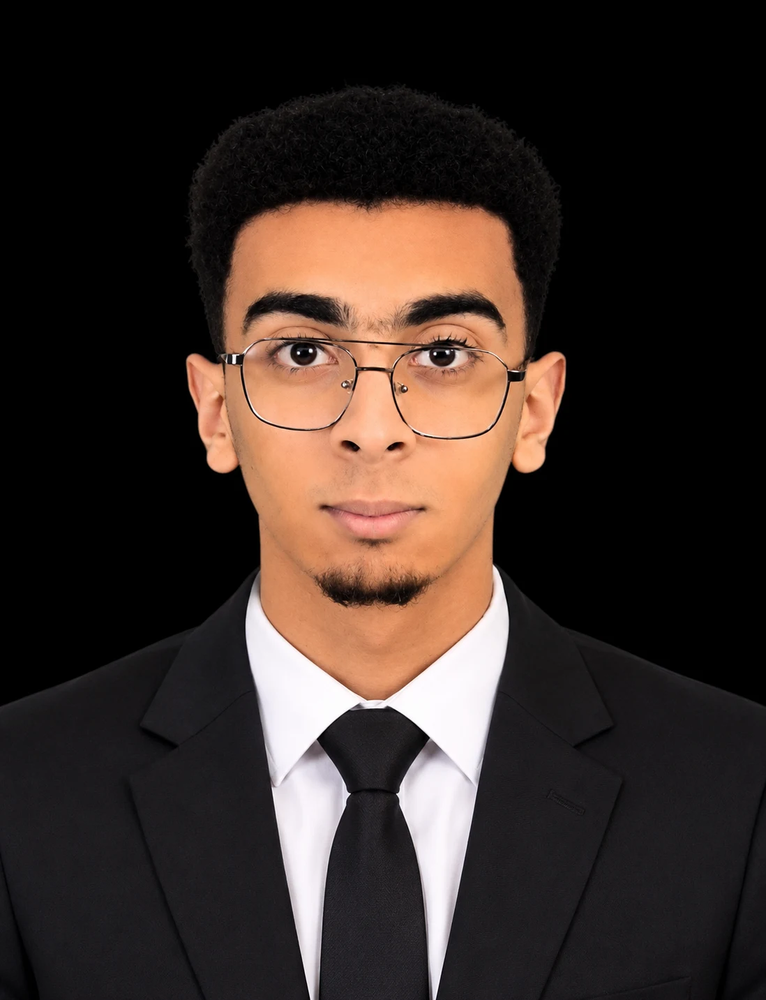

Communication digitale
Création de contenus et gestion de la présence sur les réseaux sociaux pour les marques et les associations.

Des idées créatives, une communication engagée et une pédagogie qui inspire.
Je suis Daraoui Mohammed, diplômé en commerce et marketing de l’ISTA Polo de Casablanca, passionné par la communication, la création de contenu et l’animation pédagogique.
Responsable du département marketing de l’Association Jeunesse de la Citoyenneté Marocaine (AJCM) – branche Hay Adil, je contribue à valoriser les initiatives associatives et à créer des contenus adaptés à leurs publics.
Également animateur et encadrant pédagogique, je conçois et anime des activités qui favorisent la créativité, l’autonomie et l’esprit d’équipe chez les enfants et les jeunes.
Création de contenus et gestion de la présence sur les réseaux sociaux pour les marques et les associations.
Conception de visuels pour les réseaux sociaux, d’affiches et de supports de communication adaptés à l’identité de chaque projet.
Réalisation de portraits et de photographies pour mettre en valeur les personnes, les événements et les projets.
Conception et animation d’activités éducatives, culturelles et ludiques adaptées aux enfants et aux jeunes.
ISTA Polo, Casablanca
Lycée Jaâfar El Fassi, Casablanca
OFPPT
OFPPT
Cisco Networking Academy
Cisco Networking Academy
Cisco Networking Academy
Cisco Networking Academy
ALX & MNTR
Cursa
Initiative Urbaine · Cooperació Valenciana · Generalitat Valenciana · Syndicalistes sans Frontières
Cisco Networking Academy
Cisco Networking Academy
Cisco Networking Academy
OpenEDG · Cisco Networking Academy
OpenEDG · Cisco Networking Academy
Network Development Group · Cisco Networking Academy
Python Institute · Cisco Networking Academy
Boeing · Amideast · INDH
Canva Design School
Ministère de la Jeunesse, de la Culture et de la Communication · AJCM
Ministère de la Jeunesse, de la Culture et de la Communication · AJCM
Ministère de la Jeunesse, de la Culture et de la Communication · AJCM
Association Jeunesse de la Citoyenneté Marocaine — branche Hay Adil
Association Jeunesse de la Citoyenneté Marocaine — branche Hay Adil
Centre des Langues et de Communication — Hay Adil
AMBF Business — Agence de marketing digital, Casablanca
Participation à des shootings photo et création de visuels pour les réseaux sociaux.
Taha Ikhwan — Entreprise de peinture
Participation à la gestion des produits de l’entreprise.
Un projet, une collaboration ou une opportunité professionnelle ? Échangeons.